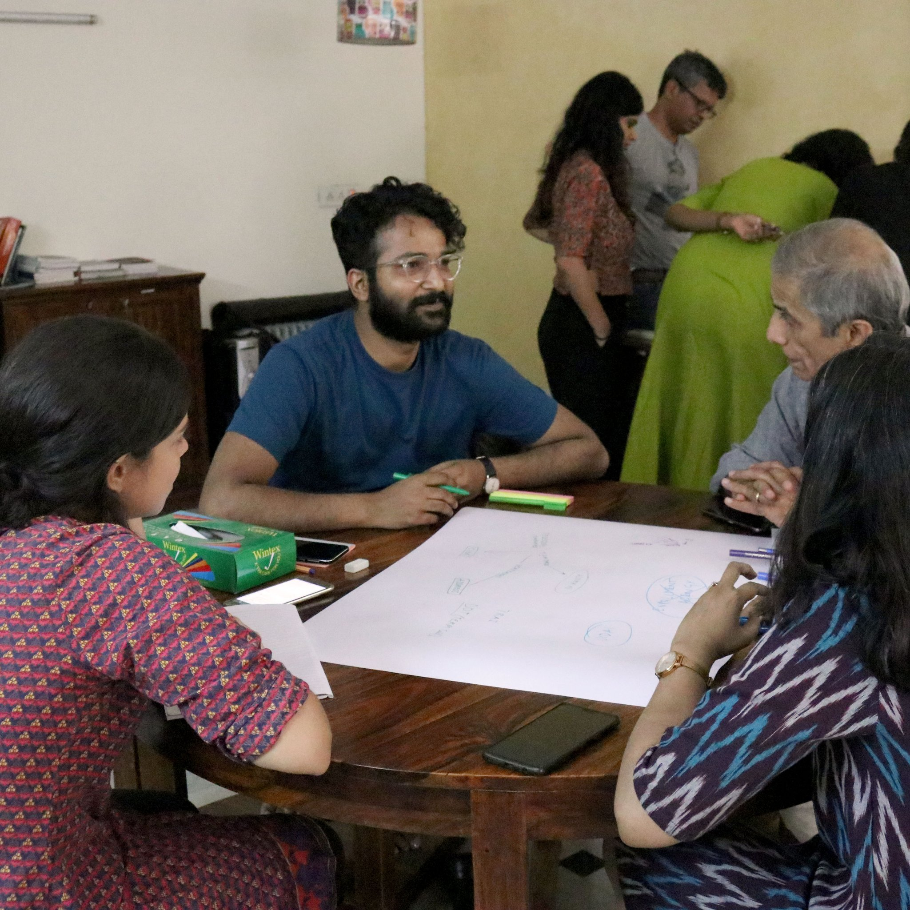

Download
Download
 Read
Read
A project of the Centre for Internet and Society, India
supported by Omidyar Network
Febraury 13, 2020
Read the case-study or download as PDF
In our third case-study, we use our Evaluation Framework for Digital ID to examine the use of Digital ID in the healthcare sector.
Febraury 6, 2020
Read the case-study or download as PDF
In our second case-study, we use our Evaluation Framework for Digital ID to assess India’s Unique Identity Programme.
January 30, 2020
Read the case-study or download as PDF
This is the first in a series of case studies, using our recently-published Evaluation Framework for Digital ID. It looks at the use of digital identity programmes for the purpose of verification, often using the process of deduplication.

January 22, 2020
As governments across the globe implement new and foundational digital identification systems (Digital ID), or modernize existing ID programs, there is an urgent need for more research and discussion about appropriate uses of Digital ID systems. This significant momentum for creating Digital ID has been accompanied with concerns about privacy, surveillance and exclusion harms of state-issued Digital IDs in several parts of the world, resulting in campaigns and litigations in countries, such as UK, India, Kenya, and Jamaica. Given the sweeping range of considerations required to evaluate Digital ID projects, it is necessary to formulate evaluation frameworks that can be used for this purpose.
This work began with the question of what the appropriate uses of Digital ID can be, but through the research process, it became clear that the question of use cannot be divorced from the fundamental attributes of Digital ID systems and their governance structures. This framework provides tests, which can be used to evaluate the governance of Digital ID across jurisdictions, as well as determine whether a particular use of Digital ID is legitimate. Through three kinds of checks — Rule of Law tests, Rights based tests, and Risks based tests — this scheme is a ready guide for evaluation of Digital ID.
January 22, 2020
Read the blogpost
This blogpost supplements our Evaluation Framework for Digital ID, presents key highlights and documents our research process.
December 13, 2019
This is the first in a series of research maps, resulting from our global survey of digital identity systems. Read together with our glossary of core concepts and processes, these maps provide a coherent view of digital identity in Estonia. They shine a light on the pervasiveness of digital identity, as well as dissect digital identity systems in a way that brings attention to the actions of key stakeholders, and to kinds of data and how they are shared. Designed as stepping stones to further research, the maps facilitate the identification of points of accountability and intervention.

December 13, 2019
Read the Essay
In this short essay, which accompanies our research maps on the digital identity system in Estonia, we summarize key insights derived from the research process, mapping exercise and the maps themselves.
November 29, 2019
Read the Event Report
Digital identification systems present a set of unique challenges for both implementing agencies and users. As countries around the world roll out their digital ID systems — for purposes such as financial inclusion and access, providing easier access to healthcare services, aiding the disbursal of government rations, subsidies, etc. — there are concerns around the efficacy of and privacy offered by such systems. The ID4D Workshop on Good ID in Practice sought to arrive at practical solutions to some of these challenges.
September 13, 2019
Read the Glossary
When we embarked on this research project, we began with the primary questions of what constitutes a digital identity system. Through a preliminary study of existing identity systems, we have arrived at these core set of concepts and processes that mark a digital identity system. This illustrated and interactive glossary can serve as an easy reference for anyone seeking an introduction to digital identity.

August 7, 2019
Read our Comments
This post presents our comments to the ID4D Practitioners’ Guide: Draft For Consultation released by ID4D in June, 2019. CIS has conducted research on issues related to digital identity since 2012. This submission is divided into three main parts. The first part (General Comments) contains the high-level comments on the Practitioners’ Guide, while the second part (Specific Comments) addresses individual sections in the Guide. The third and final part (Additional Comments) does not relate to particulars in the Practitioners' Guide but other documents that it relies upon. We submitted these comments to ID4D on August 5, 2019.
July 26, 2019
Read Research Plan
In our research project about uses & design of digital identity systems, we ask two core questions: a) What are appropriate uses of ID?, and b) How should we think about the technological design of ID? Towards the first research question, we have worked on first principles and will further develop definitions, legal tests and applications of these principles. Towards the second research question, we have first identified a set of existing and planned digital identity systems that represent a paradigm of how such a system can be envisioned and implemented, and will look to identify key design choices which are causing divergence in paradigm.
July 17, 2019
Read Event Report

Together with the Institute of Technology & Society (ITS), Brazil, and the Centre for Intellectual Property and Information Technology Law (CIPIT), Kenya, CIS participated at a side event in RightsCon 2019 held in Tunisia, titled Holding ID Issuers Accountable, What Works?, organised by the Omidyar Network. The event was attended by researchers and advocates from nearly 20 countries.
June 11, 2019
Read and comment: Draft framework by CIS
Download: Working drafts by CIPIT, CIS, and ITS
As governments across the globe implement new, foundational, digital identification systems (“Digital ID”), or modernize existing ID programs, there is dire need for greater research and discussion about appropriate uses of Digital ID systems. This significant momentum for creating Digital ID in several parts of the world has been accompanied with concerns about the privacy and exclusion harms of a state issued Digital ID system, resulting in campaigns and litigations in countries such as UK, India, Kenya, and Jamaica. Given the very large range of considerations required to evaluate Digital ID projects, it is necessary to think of evaluation frameworks that can be used for this purpose.
At RightsCon 2019 in Tunis, we are presenting working drafts on appropriate use of Digital ID by the partner organisations of this three-region research alliance - ITS from Brazil, CIPIT from Kenya, and CIS from India.
In the draft by CIS, we propose a set of principles against which Digital ID may be evaluated. We hope that these draft principles can evolve into a set of best practices that can be used by policymakers when they create and implement Digital ID systems, provide guidance to civil society examinations of Digital ID and highlight questions for further research on the subject. We have drawn from approaches used in documents such as the necessary and proportionate principles, the OECD privacy guidelines and scholarship on harms based approaches.
May 29, 2019
Read Event Report
We invited Dinesh Korjan to our Delhi office on May 27-28 to conduct a workshop about using systems thinking in design. The workshop was a step towards devising a rigourous and multidisciplinary methodology to study digital identity ecosystems globally.
May 7, 2019
Read: Announcement of the research alliance
We are happy to announce a new research grant on Digital Identities at the Centre for Internet and Society (CIS). This grant is supported by Omidyar Network India, as part of a three region alliance to be co-led by the Institute for Technology & Society (ITS), Brazil, the Centre for Intellectual Property and Information Technology Law (CIPIT), Kenya, and the CIS, India — on the Appropriate Use of Digital Identity. As part of this Alliance, we at the CIS will look at the policy objectives of digital identity projects, how technological policy choices can be thought through to meet the objectives, and how legitimate uses of a digital identity framework may be evaluated.
There is significant momentum on creation of digital identity projects especially after the adoption of UN Sustainable Development Goal 16.9, which calls for legal identity for all by 2030. Given the importance of this subject, its implications for both the development agenda as well its impact on civil, social and economic rights, there is a need for more focused research that can enable policymakers to take better decisions, guide civil society in different jurisdictions to comment on and raise questions about digital identity schemes, and provide actionable material to the industry to create identity solutions that are privacy enhancing and inclusive. We look forward to producing research that can contribute to the above.
Read the blog post by Subhashish Bhadra (Principal, Investments, Omidyar Network) announcing the three-region research alliance on the appropriate use of digital identity.
Project Team
Amber Sinha Twitter
Saumyaa Naidu Twitter
Shruti Trikanad Twitter
Sumandro Chattapadhyay Twitter
Sunil Abraham Twitter
Yesha Paul Twitter
Advisors
This website presents research undertaken by the Centre for Internet and Society, India on appropriate design choices for digital identity frameworks, and their implications for both the sustainable development agenda as well for civil, social and economic rights. This research is supported by a grant from Omidyar Network India.
CIS is a non-profit organisation that undertakes interdisciplinary research on internet and digital technologies from policy and academic perspectives. Through its diverse initiatives, CIS explores, intervenes in, and advances contemporary discourse and regulatory practices around internet, technology, and society in India, and elsewhere.